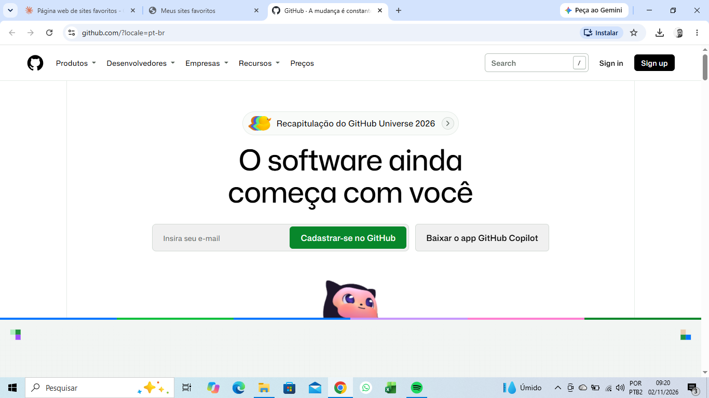
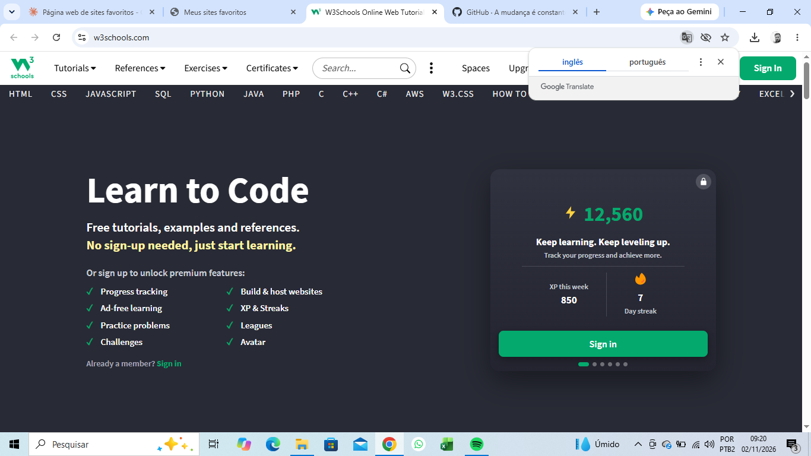
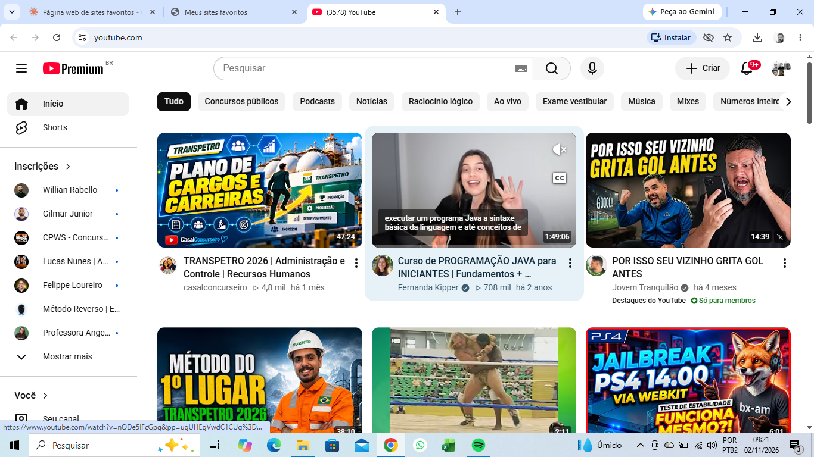
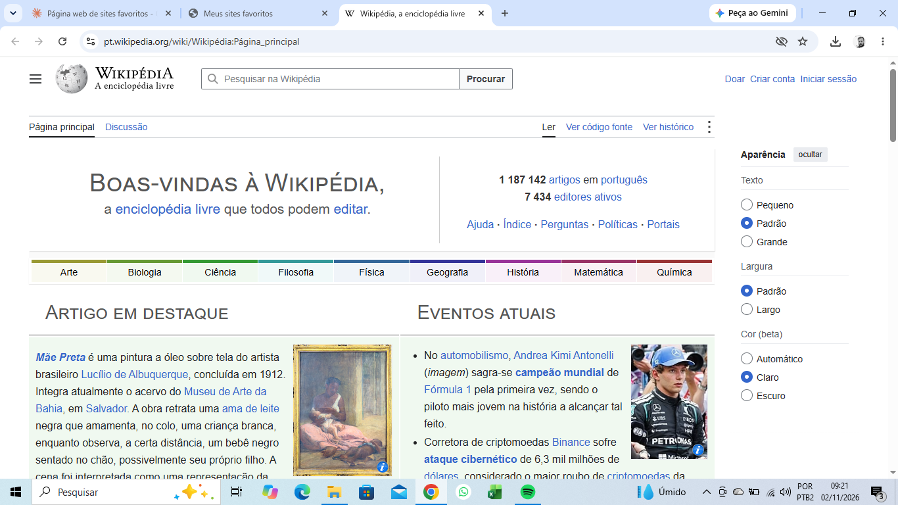
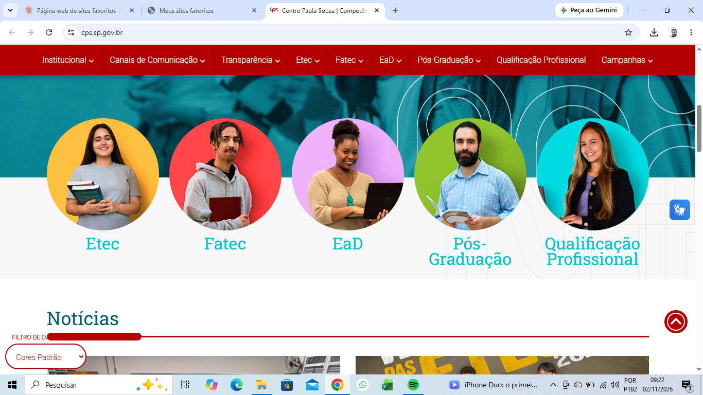

GitHub

Onde guardo meus projetos de programação.
https://github.comW3Schools

Tutoriais de HTML, CSS e outras linguagens.
https://www.w3schools.comYouTube

Videoaulas e passatempo.
https://www.youtube.comWikipédia

Enciclopédia livre para pesquisas.
https://pt.wikipedia.orgCentro Paula Souza

Site das Etecs e Fatecs.
https://www.cps.sp.gov.br